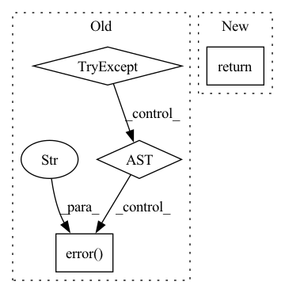

Pattern ID :17677

Before Change
self, preds: Tensor, targets: Tensor, *args, **kwargs
) -> MetricDict:
map = torch.tensor(-1.0)
try:
map = compute_map(self)(preds, targets)
except RuntimeError: // pragma: no cover
logger.error("Unable to compute mAP.")
return {"mAP": map}
def compute_map(self):
After Change
def metrics_epoch(
self, preds: Tensor, targets: Tensor, *args, **kwargs
) -> MetricDict:
return {"mAP": self._compute_mean_average_precision(preds, targets)}
def TopKAccuracyMetric(*Ks) -> MetricMixin:
In pattern: SUPERPATTERN
Frequency: 3
Non-data size: 4
Instances
Fragment ID: 58328990
Project Name: lukashedegaard/ride
Commit Name: 2dd165b523176d17bbef80f9e95bef965d11ce2a
Time: 2021-09-27
Author: lukasxhedegaard@gmail.com
File Name: ride/metrics.py
M Class Name: MeanAveragePrecisionMetric
N Class Name: MeanAveragePrecisionMetric
M Method Name: metrics_epoch(3)
N Method Name: metrics_epoch(3)
M Parent Class: MetricMixin
N Parent Class: MetricMixin
M File Name: ride/metrics.py
N File Name: ride/metrics.py
M Start Line: 116
M End Line: 121
N Start Line: 126
N End Line: 126
'>
Before Change
_kind = "pea"
def _add(self):
try:
self._logger.debug(
f"sending POST request to mini-jinad on {self.host}/{self._kind}"
)
r = requests.post(url=f"{self.host}/{self._kind}", json=self.params)
if r.status_code != requests.codes.created:
raise Runtime400Exception(
f"{self._kind.title()} creation failed: {r.json()}"
)
return r.json()
except requests.exceptions.RequestException as ex:
self._logger.error(f"{ex!r}")
raise Runtime400Exception(
f"{self._kind.title()} deletion failed. request timed out"
)
After Change
raise Runtime400Exception(
f"{self._kind.title()} creation failed: {response_json}"
)
return response_json
async def _update(self, uri, **kwargs):
// TODO
'>
Fragment ID: 58328991
Project Name: jina-ai/jina
Commit Name: 5082c49ebcf70b070f96682b7e1766c17822253b
Time: 2021-07-15
Author: deepankar.mahapatro@jina.ai
File Name: daemon/stores/peas.py
M Class Name: PeaStore
N Class Name: PeaStore
M Method Name: _add(3)
N Method Name: _add(1)
M Parent Class: ContainerStore
N Parent Class: ContainerStore
M File Name: daemon/stores/peas.py
N File Name: daemon/stores/peas.py
M Start Line: 12
M End Line: 29
N Start Line: 17
N End Line: 37
'>
Before Change
self, preds: Tensor, targets: Tensor, *args, **kwargs
) -> MetricDict:
map = torch.tensor(-1.0)
try:
map = compute_map(self)(preds, targets)
except RuntimeError: // pragma: no cover
logger.error("Unable to compute mAP.")
return {"mAP": map}
def metrics_epoch(
self, preds: Tensor, targets: Tensor, *args, **kwargs
After Change
def metrics_step(
self, preds: Tensor, targets: Tensor, *args, **kwargs
) -> MetricDict:
return {"mAP": self._compute_mean_average_precision(preds, targets)}
def metrics_epoch(
self, preds: Tensor, targets: Tensor, *args, **kwargs
'>
Fragment ID: 58328992
Project Name: lukashedegaard/ride
Commit Name: 2dd165b523176d17bbef80f9e95bef965d11ce2a
Time: 2021-09-27
Author: lukasxhedegaard@gmail.com
File Name: ride/metrics.py
M Class Name: MeanAveragePrecisionMetric
N Class Name: MeanAveragePrecisionMetric
M Method Name: metrics_step(3)
N Method Name: metrics_step(3)
M Parent Class: MetricMixin
N Parent Class: MetricMixin
M File Name: ride/metrics.py
N File Name: ride/metrics.py
M Start Line: 106
M End Line: 111
N Start Line: 121
N End Line: 121